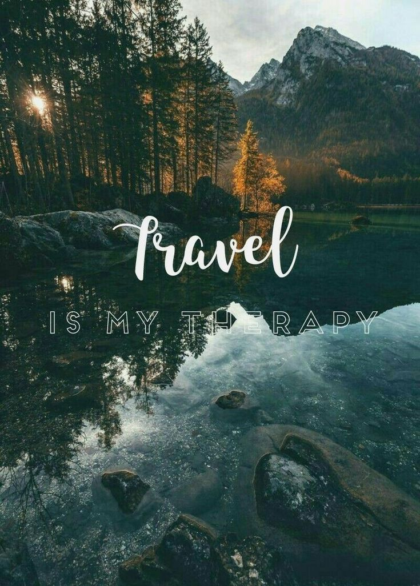

Start Exploring
Welcome to Travel Adventures
Traveling is a wonderful way to explore new places and experience different cultures. It gives us an opportunity to step away from our daily routines and discover how people live in different parts of the world. Every journey can create memories that last a lifetime.
Visiting new destinations allows travelers to see beautiful sights, taste different foods, and meet new people. Each destination has its own history, traditions, and attractions to discover. These experiences can make traveling both exciting and educational.
This website shares information about interesting travel destinations and useful tips for travelers. It includes popular places to visit and some basic advice that can help while planning a trip. The goal is to make traveling easier, safer, and more enjoyable.